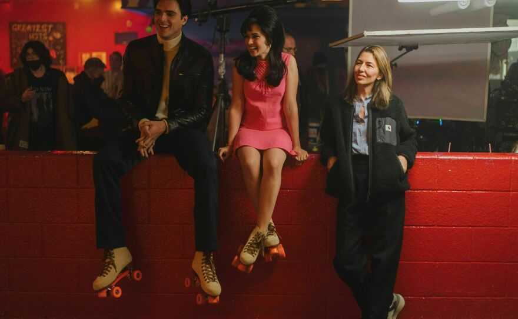

I WISH MY NAME WAS EDDIE VAN HALEN — January 16th, 2026
Last night I attended my first philosophy lecture for the semester. I already had a suspicion that it’ll be my favourite course for this semester and I was proven right. The only note
I wrote was: “I really like his hair. The pony tail rocks”. But it did make me realize that I have an issue with focusing. I kept falling off the track into conversation with myself.
Really upset about that because the way he was articulating was beautiful.
In addition to my cool philosophy professor is my cool computer hardware teacher. In the course syllabus he put a photo of Keith Richard’s (Rolling Stones) that he had taken himself back
in 2013. At the beginning of class he had played a bit of ‘Wish You Were Here’ on his neat guitar. Awesome guy. I’ve been meaning to listen to more of the Stones but there’s one thing in
the way of that… my very strong dislike held for Jagger. That pervert just gets on my nerves. And even more because he had a sick haircut that I kinda want. But all the Stone’s had good heads
of hair. Is it hypocritical if I do listen to them? But for the moment my favourite by them is ‘Time is on my side’.
Right now I’m feeling a mix of excitement but some worries for all my classes. But as long as I master the art of time management and completing a to-do list, I’m sure I’ll be fine.
ANT FARMS ARE STRANGE — January 13th, 2026
Hello again world. How are you doing? I am doing fairly well. It’s a new year and therefore a new me typing this out. I’m currently in my Calculus II lecture. The instructors voice
is very monotone and his teaching is not that exciting. Calculus has been around for a while so I think it should be taught with some pep in its step considering we are not asking many
questions as the mathematicians before us. Math can be interesting when you approach it as such. But he did already irk me. He wrote out a formula on the board and said something along the
lines of: “you don’t need to know what it means, you just have to use it”. And that everyone is what deters a lot of people from learning math! As a teacher you should be explaining and giving
reasoning not just shoving equations into faces and being like Duhhh of course you use that because that’s just how it is. It doesn’t promote curiosity it only fosters confusion. But from how this
is going I can tell that I’ll be the one teaching myself this course. Some people are walking out. Good for them.
I spent the last week with my parents down in Florida near Orlando. Visiting the States is like exploring Canada but there’s just something a little off so you spend sometime trying to pinpoint what that
difference is. Maybe the buildings support beams are at a 95 degree angle instead of 90 degrees. The sky’s were clear and blue and the sun was sharing her warmth all week long. It was refreshing and melted
away a lot of my stresses regarding the upcoming months.
(I also spent a lot of time listening to the beach boys. My travelling pro tip for you is to constantly listen to the music of the country/place you’re visiting. There is no better feeling than that)
When coming back from the beach my parents and I stopped at a cool old car meet-up that was happening in a restaurant parking lot. My mom is uninterested in that stuff so she sat this one out.
If you know my dad you know that he loves cars. I think it’s a given considering he’s an engineer and sells censors that end up in various vehicles. He even used to own an old Benz from either the 70’s or 80’s.
It was loud but had a smell that I wish I could get one more whiff of. What I enjoyed even more than the cars was seeing how happy and giddy my Dad was. I told him that car meets are to him what record stores are to me.


The sleek black convertible Porsche that caught my Dad's eyes. Don't remember what year she's from
Several hours have passed since I wrote the previous chunk of text. Let’s see what else is on my mind. Oh yeah!
Before returning to my hometown I told myself that I needed to go rollerskating at the local roller palace. Admittedly, I am not that good at it! But after a while as I gain more confidence it becomes super duper fun.
It feels like you’re flying. And a fun fact about the rollerskating place is that some scenes from Priscilla were shot there! I love that movie. When I went to go watch it I had my hair freshly cut, a license to drive
without a parent beside me, and a cold night to soak in my feelings surrounding the film. I absolutely adore it.

Inbetween scenes while shooting Priscilla [(Left to right) Jacob Elordi, Cailee Spaney, Sofia Coppola.]
My close friends will know all about my curly hair and I. How it’s very much a love hate relationship. If you were to look at the top of my head right now you would heavily doubt the ‘curly’ part. That’s because
I fried it down into straight strands and with all that heat damage I lost a part of myself. I miss them. So, from now on I am taking a break from my hair straightener. Right now it’s day two of this commitment.
I’m finding the messiness of it to be beautiful and really suiting. I’m trying to not be so harsh regarding my appearance in general as well so this adds an extra layer of challenge. Maybe I should leave an inspiring
message but I can’t do that at this time.
Following Paul Mescal's comment regarding the Beatles biopics I need to get this one thing out. I am absolutely giddy for Aimee Lou Wood being cast as Pattie Boyd. I adore Pattie Boyd so much so I made a facebook account to join the
Something about the Beatles' girls facebook group just so I could get my hands on more photos of her. I adore Aimee Lou Wood ever since watching her performance on Sex Education.
If you are like me I urge you to join the group as well because there are some dedicated members on there that contribute gems. Warning: Yoko and Olivia are not
featured there and there are occasional comments made towards them. Beware!
And with that I believe that’s all I have for you right now. Love ya!
I CAN'T COME SEE YOU BECAUSE ITS DARK AND COLD OUTSIDE -- December 8th, 2025
I am pumped full of caffeine and yet I yawn every five minutes. Last night I think I was suffering the consequences of the caffeine surplus because I felt strange.
Strange how? You might be wondering well fortunately for you I don’t know how to describe it. It’s kinda like if the air around you stood still, you’re moving at what you
think is a regular pace when in reality you just kinda look like a freak attempting to moonwalk. I found this one album (it’s actually a compilation) off of a Rate Your Music
list that has an alien on the cover. Aliens have taken over my brain and it was gonna happen sooner or later. I know RYM isn’t highly thought of. I see it as being the wikipedia to
teachers in a music nerds context. I don’t actually read the reviews what I do is go shopping in the user made lists and check out the albums with covers I find cool. It’s a testament
to my habit of judging a book by its cover because if your album art is ugly I am not touching the music inside even if it’s a hidden gem. I have my standards and I will hold you to them.
As for linear algebra…. Not much is going on. Panic hasn’t set in but it’s because I’m just so absolutely tired. I already swore myself in to retake the class. If I were not me and I
was giving myself advice I would tell her to keep going. You never know what you never know the future in your hands and your mind is capable of more than you can imagine. Did that help
you too? Im rambling my apologies
NOW YOU SEE ME NOW YOU DON’T -- November 20th, 2025
I have a dilemma. Do I delete all my social media pages, or do I keep them?
I’ve been on the internet for a long long time. I remember spending my summer days staying inside watching YouTube during the summer of grade 3,
setting up my first instagram account at age 10, playing flash games on the family computer with my sister (this lasted for a while), etc. I mean, me and the
rest of the people in my generation were born into the age of the internet. Although it was a bit different compared to now in the sense that an iPad wasn’t placed
into my lap the second I developed basic motor skills.
As a result of my long-time internet use came an impressive portfolio of internet drama knowledge and an ever increasing screen time. Hours upon hours spent with eyes
stuck to a screen, and I’m pretty embarrassed about how bad it got to be at certain points. I’m going to skip over talking about why a high-screen time is bad as well as
elaborating on why social media is harmful because I assume you know the reasons yourselves.
The rock that broke the mirror was a moment I had while sitting on the train sometime last week. I looked around at the other passengers in the carriage and every single
one of them had their necks craned and eyes glued to the screen in their hands. I don’t know what their day was like before hand and whether this was their first time in hours
being able to check their messages, or have a moment to relax and tune into their current watch, but this strange feeling began to loom over me. Have we reached a point of no return?
The internet is no longer what it used to be. It’s now corporate ridden, becoming more and more hateful, and made to keep your attention. Brains are becoming mushy and cases of social anxiety
rise each day. Who I’m becoming/want to become cannot be cultivated on poor soil. I want to be able to think without influence, I want to spend my time indulging in hobbies I enjoy, and to simply
put it want a break. And I’ve reached my conclusion.
I could say more, but I don’t really want to. Thanks for helping me figure this out
ADVICE COLUMN -- November 12th, 2025
I easily slip into daydreaming about my ideal life, self, and world. I’m reluctant to face the fact that I could be somewhere else if I had let go of my ego and faced the unknown.
“No one told you when to run, you missed the starting gun”
A confession on my end: I’m doing everything completely wrong right now. This is not where I’m meant to be and I need to go.
So, I hereby vow to do everything in my power to become/do everything I want to be/do. I will not submit myself to a life of misery to appease someone other than me.
I’m only given this one life and the biggest sin of all is to waste it.
YOLO, DIE LIT, MEMENTO MORI, CARPE DIEM, LIFE IS SHORT, C’EST LA VIE
FALL ALBUMS -- November 4th, 2025
Opening message: "Whatever you end up doing, love it."
1. Heaven or Las Vegas - Cocteau Twins
2. Unknown Death 2002 - Yung Lean
3. Milk & Kisses - Cocteau Twins
4. Either/Or - Elliot Smith
5. Blodhundar & Lullabies - Jonatan leandoer96
6. Pink Moon - Nick Drake
7. Harvest Moon - Neil Young
8. Rubber Soul - The Beatles
9. The Bends - Radiohead
10. 13 - Blur
11. Soundtrack from Twin Peaks - Angelo Badalamenti
12. LSD and the Search for God - LSD and the Search for God
13. 1972 Obfuscation Pink Floyd (live at Pompeii recordings)
14. In Rainbows - Radiohead
15. Flesh Balloon - Pale Saints
16. Bookends - Simon & Garfunkel
17. Pet Sounds - The Beach Boys
18. Revolver - The Beatles
19. Sign o’ the Times - Prince
20. Pieces of a Man - Gil Scott Heron
21. Blonde on Blonde - Bob Dylan
22. American Football - American Football
23. I Want You - Marvin Gaye
24. Woman - Nancy Sinatra
25. Rumours - Fleetwood Mac
26. Tidal - Fiona Apple
27. Faith - The Cure
28. Pornography - The Cure
29. Blue - Joni Mitchell
30. Meat is Murder - The Smiths
31. Carrie & Lowell - Sufjan Stevens
32. Bridge Over Troubled Waters - Simon & Garfunkel
33. I Had Too Much To Dream - The Electric Prunes
34. Siamese Dreams - The Smashing Pumpkins
35. Alice in Chains - Alice in Chains
APOLOGETICALLY ME Q AND A -- October 30th, 2025
Q: What is one thing you made that you are proud of?
A: In elementary school I had a project where you had to make a model of a historical building/place, and I chose Tower Bridge.
If you don’t know what Tower Bridge is picture two towers with a bridge connecting them. The materials of choice were popsicle sticks and globs of hot glue.
The outcome was a 1:1 replica of the bridge itself. My classmates gawked as I wagoned it in. I don’t really remember who came up with the idea to make the draw bridge actually draw but it was most likely my Dad.
With some tools and passion he made the bridge walk, breathe, sing, and even draw! Sure, I stole from a small artist and pasted my name right across that project and bathed in the glory, but it was pretty obvious I was not the mind behind the mechanics.
If you ever go to that bridge just know that a better one once existed.
Q: Imagine that you could choose when and how you die. What age would you like to die and how would you like to go?
A: I like to think that my time is up at 50. Maybe saying “I like to think” is strange and gives the wrong impression but imagine this: You’re 51.
Not as fun as fifty is it? The cause of death would be slipping in someone’s spilled drink on a dance floor hitting my head on floor and with hazy sight
the glimmer of the disco ball sparkles in my eyes.
Q:What do you know isn’t real, but want badly for it to exist?
A: Cat aliens. The kittens eat octopus tentacles and the older cats meow the notes of the cat piano children’s toy.
Q:What is the greatest physical pain you’ve ever felt?
A: I had this dream one night where I was stabbed in the lower abdomen. I felt the blade go in and the warmth of the blood on my skin. Right after being stabbed I shot up awake and held the spot of the wound.
One of the coolest feelings I’ve ever felt.
Q: In what ways are you stubborn?
A: When my mind makes a decision there is very little hope of talking me out of it. Example: I decided that I wanted the under-dye hair style. My hair is naturally curly and I was straightening my hair on a daily basis.
Now think of the damage bleaching it would add on top of that. My Mom told me that it was a bad idea, but nothing was moving me away from the vision. Well, I ended up dying it back to my natural hair colour and was left with absolutely
nothing to work with. I really regretted it and with a heavy head had to admit to my Mom she was right. But, the best way to learn is from your mistakes.
Q: What do you think happens after we die, if anything?
A: I like to imagine it being like a bear heading to hibernation. You enter a cave, like down in a soft bed, close your eyes, and drift into a warm slumber. To me the idea of living eternally some form of afterlife world is a nightmare.
Knowing the end is the end gives me great comfort and more reason to make the most of what I’m given now. It would also make the saying: “you only live once” false, which I don’t like.
Q: What is something you and I disagree on?
A: Maybe the idea of god, maybe what colour foods we would eat if we were only allowed to eat one colour, probably what the moon dreams of when she goes to sleep, but I think we would agree that mice should be given little hats.